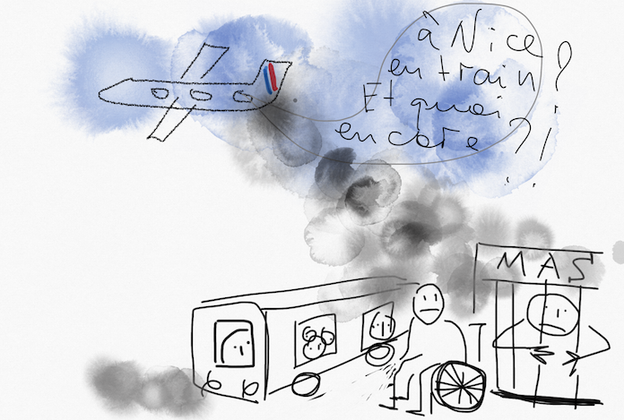

Paru dans Francedisability le 24 Novembre 2019
Le 18 Février 2010, la France a ratifié la Convention Relative aux Droits des Personnes Handicapées (CDPH). En accord avec
l’article 55 de la Constitution de la République Française, la CDPH s’impose au-dessus du droit national et aucune mesure
supplémentaire n’est nécessaire pour qu’elle soit prise en compte tant dans les politiques publiques du handicap que dans
les décisions juridiques. Cela est pourtant loin d’être le cas, 10 ans après la ratification de la Convention.
lire la suite
Notre action
Il n’existe que très peu de données sur les personnes considérées comme atteintes d’altération mentale, toutes celles et ceux qui sont déclarés en France comme "incapables de discernement". Ce sont des personnes à part entière dont il s’agit, des citoyens comme les autres, mais dont la vie est vue comme moindre que celle des autres.
En butte à des difficultés d’accès à l’éducation durant l’enfance et la jeunesse, une fois majeures, ces personnes se retrouvent privées des droits et sont (presque) toujours contraintes de vivre enfermées à vie, que cet enfermement soit consenti (par l’entourage, faute d’autre solution), ou non.
Ajouté au manque de données, cela crée une invisibilité, qui finalement arrange bien tout le monde. Dans une société régie
par la chiffre et par l'image, l'absence de visibilité équivaut à une disparition pure et simple. Pour lutter contre cet état
de fait, nous pensons que la première chose à faire est de rendre la visibilité. D'arrêter d’esthétiser le handicap. Dire et
montrer la vérité. Publier les histoires concrètes et non plus des "happy end stories",
litanies sur "le manque de places" et les conseils pour aider à se faire parquer par la MDPH.
Vous pouvez écrire un témoignage en nous contactant directement.
Vous avez le choix d'utiliser ou pas les vrais noms et adresses. Si vous nous confiez des images, nous vous demandons votre
consentement explicite pour publication éventuelle.
Notre but ultime - le respect des droits des personnes handicapées tels que fixés dans la Convention de l'ONU relative
aux Droits des Personnes Handicapées, l'abolition de la pratique de la prise de la décision substituée et
la desinstitutionalisation effective.
Ce site a vocation à devenir bilingue (avec une version anglaise), mais aussi de rapporter des expériences alternatives
dans d'autres pays, dans la rubrique dans le monde.
Nous mêmes sommes des proches d’une personne en situation de relégation sociale, nous n'avons aucun conflit d’intérêt ni
subvention, publique ou privée. Nous connaissons l'urgence d'agir.
Dernières publications

10 ans après sa ratification, la CDPH reste inconnue en France

Trois approches du handicap
Paru dans Francedisability le 29 Novembre 2019
Quelle est la différence entre les droits spécifiques et le droit du handicap?
Les premiers ne font-ils nous pas oublier le second? Qu'est ce que c'est le modèle social et pourquoi tant
de querelles entre ses partisans et les parents de soi-disant "cas lourds"? Y'a-t-il un consenssus possible? Ce court
vade-mecum
va vous aider à y voir plus clair
lire la suite
Autisme: et si on se trompait de bataille?
Paru dans Francedisability le 24 Novembre 2019
La communauté des familles françaises des personnes autistes part, une énième fois, à la chasse au psykk: une pétition
circulant sur facebook demande de bannir la psychanalyse des tribunaux. En même temps, 55 associations de
familles des personnes autistes se fendent d’une communication en exigeant "des places en prévision". Le modèle médical, abandonné
un peu partout dans le monde, reigne sans partage en France.
lire la suite
Le rapport inédit sur la privation arbitraire de la liberté liée au handicap pointe la situation alarmante en France
Paru dans Francedisability le 7 Octobre 2019
Le Rapport sur la Privation de Liberté Spécifique des Personnes Handicapées a été publié en Mai 2019 sur le site web du Centre
du Droit du Handicap de l’Université de Galway (Irlande), dont l’équipe a conduit la recherche. Bien que la France fasse partie des pays cibles de la recherche,
le rapport a été passé sous silence total par les médias français, y compris ceux consacrés au handicap.
lire la suite

Sur le droit d'avoir les droits
Paru dans Francedisability le 25 Juin 2019
La discussion autour de la taxation du transport aérien, qui s’est tenue le 14 Juin dernier à l’Assemblée Nationale, a buté
sur l’opposition de la majorité des députés présents. OK, mais quel rapport avec la question du handicap?
lire la suite
Za zaborom ("derrière la cloture"): handicap mental et le système institutionel en Russie
Paru dans Francedisability le 11 Juin 2019
Si quelqu’un veut chercher des point communs entre la France et la Russie, il lui suffit de bien observer : en Russie,
comme en France, les handicapés mentaux sont invisibles. On ne les croise pas dans la rue ni - surtout - dans les transports
publics.
lire la suite
Sur la valeur et le coût d’une vie, sur le droit “spécifique”, l’invisibilité et l’ignorance
Paru dans Francedisability le 17 Mai 2019
Peu connaissent aujourd’hui l’existence des «ugly laws» (les lois laides ou les lois sur les laids:
les deux intreprétations sont justes) introduites dans la plupart des états des Etats-Unis à partir des années 1860, et
qui interdisaient aux personnes «laides et inconvenantes» d’apparaître en public… S’en suivait la stérilisation forcée des handicapés, mentaux et physiques, et pas uniquement aux
USA.
lire la suite
Le Défenseur des droits: qui et comment défend-t-il?
Paru dans Francedisability le 9 Mai 2019
Cet article est basé sur notre propre expérience ainsi que sur les résultats d'une courte enquête lancée en ligne en Avril 2019.
Il ne prétend pas à être un “bilan” mais est une contribution à la dissipation du flou qui persiste quand on parle de la défense des
droits des personnes handicapées en France.
lire la suite
Dupin contre la France: le triomphe de la logique ségrégationniste.
Paru dans Francedisability le 25 Avril 2019
La décision dans l’affaire Dupin contre la France concerne une question qui est portée régulièrement devant la Cour
Européenne (et pas uniquement contre la France): est-ce que l’éducation inclusive est un droit inconditionnel ou est-il
soumis à des conditions? Notons de suite que la CEDH penche pour la deuxième réponse et cela, a contrario des cas jugés
précédemment
lire la suite

Karim: le choix d'une vie "ordinaire"
Paru dans Francedisability le 19 Avril 2019
Karim a 33 ans bientôt. Il est autiste, déficient mental, il ne sait ni lire, ni écrire, ni compter....
Il vit à Strassbourg avec sa mère, Rita. Sa passion est la photographie et il a eu déjà plusieurs expositions personelles.
Il y a dix ans, il était en groupe occupationnel pour adulte, en externat et cela s’est très mal passé.
lire la suite

Présomption de la capacité: le droit des personnes avec altération mentale dans la législation britannique
Paru dans Francedisability le 14 Avril 2019
La loi sur la capacité mentale (Mental Capacity Act), votée en 2005, s’applique
depuis 2007 en Angleterre et Pays de Galles (l’Ecosse et l’Irlande du Nord ayant leurs
propres législations). Loin de vagues et grandiloquentes affirmations, cette loi trace,
avec beaucoup de précision, le cadre du respect de l’avis de la personne adulte ayant une
altération de ses facultés mentales. lire la suite